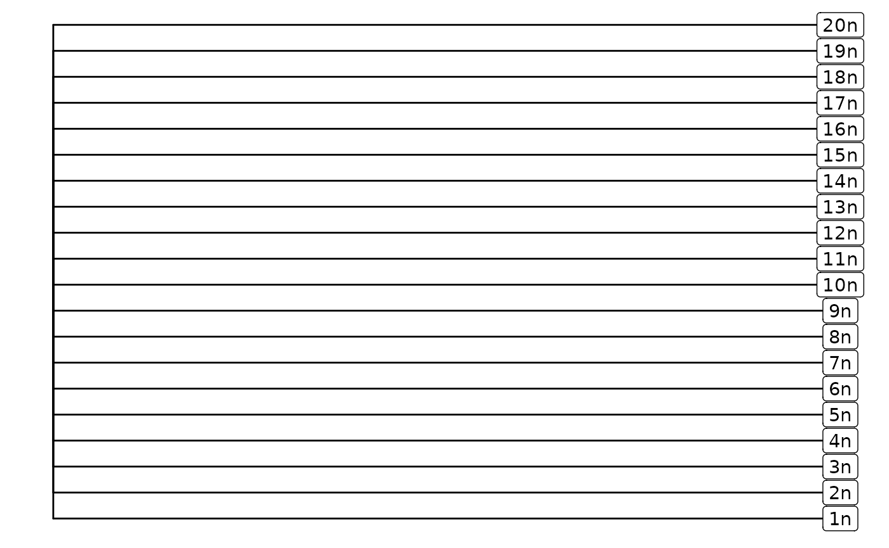
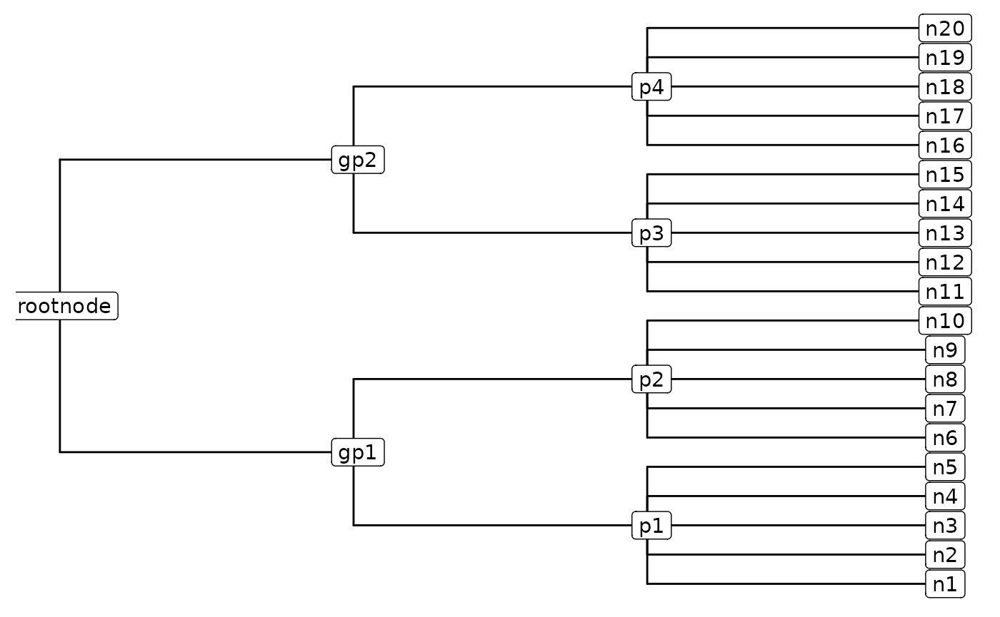

Trees! Create Custom Hierarchies to Enhance Classification
Source:vignettes/tree_vignette.Rmd
tree_vignette.RmdWhat is a Hierarchy (aka Tree)?
Note: The terms “phylogeny”, “tree”, and “hierarchy” are used interchangeably here.
A hierarchy, also known as a tree, is a type of graph that illustrates the relationships among a set of entities (represented as nodes in a tree). Each node (with the exception of the rootnode) descends from a parent node, and nodes that descend from the same parent are more related to each other than are entities that descend from different parent nodes.
Why use a hierarchy?
This article discusses the use of tree-based functionality in creating and applying classification models. The main idea behind using a hierarchy is to incorporate prior knowledge about the relationships between cell types, typically provided in phylogenetic analyses of cell types in large-scale reference atlases, to enhance classification speed and accuracy.
What are the advantages of using a hierarchy?
Hierarchies can be used with both pairwise and non-pairwise classification methods. However, since this package employs pairwise methods, the focus here is on benefits in a pairwise context, although some advantages are applicable to both.
Advantage Number 1: Reduced Computational Resources and Time
One of the primary benefits of using a hierarchy is reducing the amount of computations you need to perform to get a classification. This becomes particularly crucial when your reference atlas has many cell types (ex: dozens or hundreds). In a pairwise context, using a hierarchy significantly reduces computational time by reducing the number of cell-cell comparisons that need to be performed to get a classification. This is because the number of pairwise comparisons you’ll need to perform at any given level of a hierarchy is proportional to the square of the number of celltypes at that level.
Number of comparisons = n(n-1) / 2
As an example, let’s take a cell and say it can be classified into one of twenty possible celltypes. Let’s say we don’t use a hierarchy, and consider each element as equally likely to occur. To get a classification we’ll need to perform 20*(20 - 1) / 2 = 190 comparisons.
equal_tree = lionmap::CreateEqualTree(cell_labels = paste0(1:20,"n"),rootnode_name = "Root")
ggtree(equal_tree) +geom_nodelab(geom = "label", node = "all") 
Alternatively, let’ say we can group the 20 nodes into 4 groups each with 5 nodes, and these groups can be grouped into two groups each with 2 nodes, and these 2 nodes group together.
You can manually create a tree that looks like this with the following code:
tree_df = tibble(
parent = c("p1","p1","p1","p1","p1",
"p2","p2","p2","p2","p2","p3","p3","p3","p3","p3",
"p4","p4","p4","p4","p4","gp1","gp1","gp2",
"gp2","rootnode","rootnode","rootnode"),
node = c("n1","n2","n3","n4","n5",
"n6","n7","n8","n9","n10","n11","n12","n13","n14",
"n15","n16","n17","n18","n19","n20","p1","p2",
"p3","p4","gp1","gp2","rootnode")
)
ggtree(treeio::as.phylo(tree_df)) + geom_nodelab(geom = "label", node = "all") 
Or, you can use the helper function CreateHierarchy, which takes in a csv file with the columns “parent” and “node”, and provides gives the relationships between each node with its parent node in the tree. The function will return a TreeData object, which you can use with the functions in Lionmap.
The total number of comparisons we need to get a classification now are: 2 at the top level (rootnode -> gp level), 2 for the second level (gp -> p level), and 5(5-1)/2 = 10 at the final level (p -> n level) for a grand total of 2 + 2 + 10 = 14 comparisons! A big difference, huh.
Advantage Number 2: Ability to assess confidence at progressively more comprehensive classification levels.
We attempt to assess whether we have high or low mapping in a given classification.
Advantage Number 3: Increase Interpretability and Lower Potential Mistakes
Using a hierarchy allows you to select features highly relevant to the current pairwise comparison of interest. At best, irrelevant information won’t contribute anything; at worst, it can interfere with proper model training and lead to classification mistakes.
In Lionmap, for each pairwise comparison at each level of the hierarchy, we find marker genes that distinguish each class and only use those in downstream analyses. This means that only present marker genes contribute to the classification, so you have a targeted group of genes you can look into further if you want to investigate how the classifiers are distinguishing the two classes of interest.
Great, now how do you build a hierarchy?
The package provides a helper function, CreateHierarchy, that takes in either a CSV file or a dataframe, and returns a tree. The input must contain two columns, one labeled “node” and one labeled “parent” and be arranged in tidy format, which just means each row corresponds to one node.
The first row denotes the column names, so column 1, row 1 should have the value of “node” and column 1, row 2 should have the value of “parent”. For each row/node, you have to say what the name of that node is (in the node column), and what the name of the parent node is (in the parent column). The names of the nodes at the most granular level should correspond to the metadata classifications (ex: cluster names) that you also input as a parameter in the FindMarkerGenes and GetModels functions. At higher levels of classification, you should also have names for internal nodes.
This helper function was made so that users can use Excel or another text editor to quickly write out the parent and child relationships in the tree and directly use it. In practice, I like to start building trees from the bottom up, first starting at the most granular classifications and then working my way toward the top.
For example, to create a hierarchical tree shown in the Advantage Number 1 section above, create a dataframe with the following data:
library(kableExtra)
tree_df = data.frame(
parent = c("p1","p1","p1","p1","p1",
"p2","p2","p2","p2","p2","p3","p3","p3","p3","p3",
"p4","p4","p4","p4","p4","gp1","gp1","gp2",
"gp2","rootnode","rootnode","rootnode"),
node = c("n1","n2","n3","n4","n5",
"n6","n7","n8","n9","n10","n11","n12","n13","n14",
"n15","n16","n17","n18","n19","n20","p1","p2",
"p3","p4","gp1","gp2","rootnode")
)
#Let's view it:
kbl(tree_df) %>%
kable_styling(bootstrap_options = c("striped", "hover", "condensed"))And now let’s use the helper function to create the TreeData object that’s used as the input hierarchical file format.
treedata_obj = CreateHierarchy(csv_file_path = NULL, df_hierarchy = tree_df)
treedata_obj## 'treedata' S4 object'.
##
## ...@ phylo:
##
## Phylogenetic tree with 20 tips and 7 internal nodes.
##
## Tip labels:
## n1, n2, n3, n4, n5, n6, ...
## Node labels:
## rootnode, p1, p2, p3, p4, gp1, ...
##
## Rooted; no branch lengths.
##
## with the following features available:
## '', 'branch_length', 'trait'.
##
## # The associated data tibble abstraction: 27 × 5
## # The 'node', 'label' and 'isTip' are from the phylo tree.
## node label isTip branch_length trait
## <dbl> <chr> <lgl> <lgl> <lgl>
## 1 1 n1 TRUE NA NA
## 2 2 n2 TRUE NA NA
## 3 3 n3 TRUE NA NA
## 4 4 n4 TRUE NA NA
## 5 5 n5 TRUE NA NA
## 6 6 n6 TRUE NA NA
## 7 7 n7 TRUE NA NA
## 8 8 n8 TRUE NA NA
## 9 9 n9 TRUE NA NA
## 10 10 n10 TRUE NA NA
## # ℹ 17 more rowsThis package relies heavily on the phylogeny-based infrastructure developed by the Yu lab. For more information, check out their book Data Integration, Manipulation and Visualization of Phylogenetic Trees.